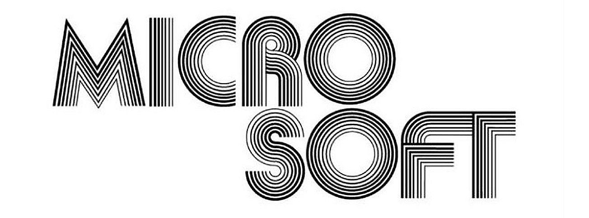
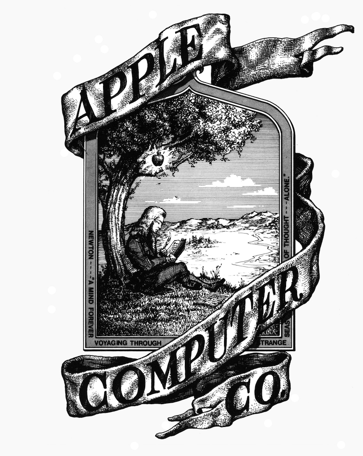
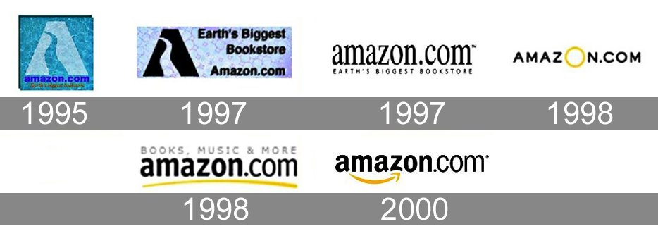
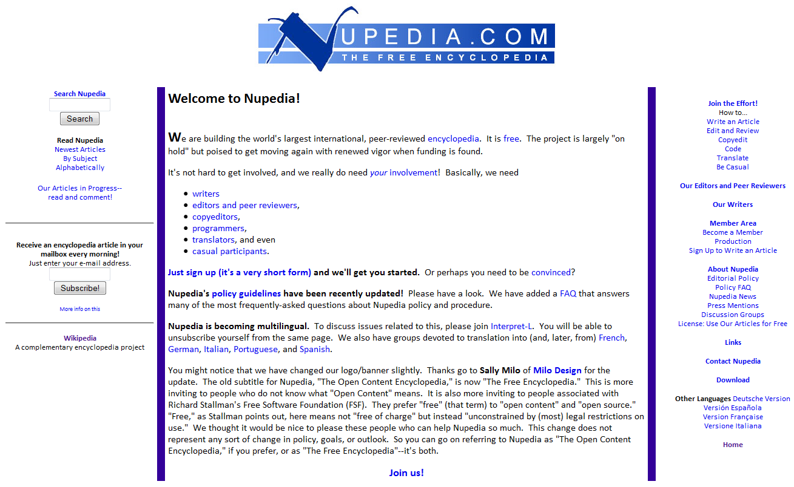
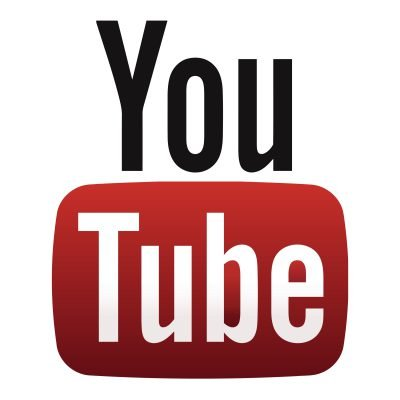

-
Advanced Micro Devices (AMD) est un fabricant de pièces électroniques spécialisé dans les semi-conducteurs, les microprocesseurs et les cartes graphiques. L'entreprise a été créée en 1969, par Jack Gifford, Walter Jeremiah Sanders III et Edwin Turney. Au jour d'aujourd'hui, AMD figure parmi les plus grands fabricants de semi-conducteurs, de cartes graphiques et de processeurs graphiques.
×
Source : Forbes
Entreprise
Advanced Micro Devices (AMD) est un fabricant de pièces électroniques spécialisé dans les semi-conducteurs, les microprocesseurs et les cartes graphiques. L'entreprise a été créée en 1969, par Jack Gifford, Walter Jeremiah Sanders III et Edwin Turney. Au jour d'aujourd'hui, AMD figure parmi les plus grands fabricants de semi-conducteurs, de cartes graphiques et de processeurs graphiques. En 1972, le premier produit créé par la société voit le jour : il s'agit de l'AM2501. La même année, la première unité de production hors des États-Unis est mise en route à Penang en Malaisie. En 1995 AMD introduit le microprocesseur AMD-K5 premier microprocesseur compatible avec l'architecture x86 et conçu de manière indépendante.
-
Fondation de Microsoft par Bill Gates et Paul Allen.
× Source : 1min30
Entreprise
La société est née en avril 1975 sous le nom original de Micro-Soft, à Albuquerque, dans le Nouveau-Mexique, du besoin de deux étudiants américains, Bill Gates et Paul Allen, de formaliser la vente de l’interpréteur de langage informatique BASIC : Altair Basic adapté par eux deux et Monte Davidoff (ou qu’ils avaient acheté à partir d’un freeware).
-
Fondation d'Apple et lancement de l'Apple I par Steve Jobs et Steve Wozniak. Apple est créé le 1er avril 1976 dans la maison d'enfance de Steve Jobs à Los Altos.
× Source : Stampaprint
Entreprise
Ensuite elle est constituée sous forme de société le 3 janvier 1977. Elle prend diverses facettes coordonnées avec l'évolution du monde informatique qu'elle précède, partant d'un monde sans ordinateur personnel à une société du XXIe siècle interconnectée par l'intermédiaire de terminaux fixes et mobiles. Elle est l'un des premiers constructeurs travaillant à la conception de machines moins coûteuses et moins encombrantes face au monopole IBM.
-
Création d'Amazon.com
× Source : 1min30
Entreprises
Création Amazon, c'est une entreprise de commerce en ligne américaine basée à Seattle. Elle est l'un des géants du Web, regroupés sous l'acronyme GAFAM8, aux côtés de Google, Apple, Facebook et Microsoft.
L'activité initiale de la société Amazon concernait la vente à distance de livres, avant que la société ne se diversifie dans la vente de produits culturels, puis marchands. Aujourd'hui, certains produits alimentaires peuvent aussi être commandés via Amazon.
Créée par Jeff Bezos en juillet 199, l'entreprise a été introduite en bourse au NASDAQ en mai 1997.
-
Création de Google
×
Source : Vincent Abry
Entreprises
Création de Google: c'est une entreprise américaine de services technologiques fondée en 1998 dans la Silicon Valley, en Californie, par Larry Page et Sergey Brin, créateurs du moteur de recherche Google.
C'est une filiale de la société Alphabet depuis août 2015.
L'entreprise s'est principalement fait connaître à travers la situation monopolistique de son moteur de recherche, concurrencé historiquement par AltaVista puis par Yahoo! et Bing. Elle a ensuite procédé à de nombreuses acquisitions et développements et détient aujourd'hui de nombreux logiciels et sites web notables parmi lesquels YouTube, le système d'exploitation pour téléphones mobiles Android, ainsi que d'autres services tels que Gmail, Google Earth, Google Maps ou Google Play.
-
Lancement de Wikipédia
× Source : Wikipédia
Entreprise
Wikipédia fut d'abord créée comme un projet secondaire alimentant Nupedia, maintenant disparue, fondé par Jimmy Wales, qui en était l'actionnaire majoritaire, afin de produire une encyclopédie libre. Wikipédia a été lancée officiellement le 15 janvier 2001 pour soutenir Nupedia, un projet semblable mais écrit uniquement par des experts. Wikipédia a grandi très rapidement au point de remplacer Nupedia, puis par la suite de devenir un projet mondial très important. Cette encyclopédie comptait en 2010 des millions de pages et d’articles rédigés par des centaines de milliers de bénévoles dans plus de deux cents langues.
-
Création de Facebook
×Source : François Charron
Entreprises
Facebook est un réseau social en ligne qui permet à ses utilisateurs de publier des images, des photos, des vidéos, des fichiers et documents, d'échanger des messages, joindre et créer des groupes et d'utiliser une variété d'applications.
Facebook est fondé en 2004 par Mark Zuckerberg et ses camarades de l'université Harvard, Chris Hughes, Eduardo Saverin, Andrew McCollum et Dustin Moskovitz. D'abord réservé aux étudiants de cette université, il s'est ensuite ouvert à d'autres universités américaines avant de devenir accessible à tous en septembre 2006. Le nom du site provient des albums photo (« trombinoscopes » ou « facebooks » en anglais) regroupant les photos des visages de tous les élèves prises en début d'année universitaire.
Troisième site web le plus visité au monde après Google et YouTube selon Alexa4, il franchit en juin 2017 le nombre de 2 milliards d'utilisateurs actifs. Le 24 août 2015, pour la première fois, un milliard de personnes ont utilisé Facebook dans la même journée
-
Lancement de Youtube
× Source : Wikipédia
Entreprise
YouTube est un site web d’hébergement de vidéos et un média social sur lequel les utilisateurs peuvent envoyer, regarder, commenter, évaluer et partager des vidéos en streaming. Il a été créé en février 2005 par Steve Chen, Chad Hurley et Jawed Karim, trois anciens employés de PayPal, et racheté par Google en octobre 2006 pour 1,65 milliard de dollars. Le service est situé à San Bruno, en Californie.